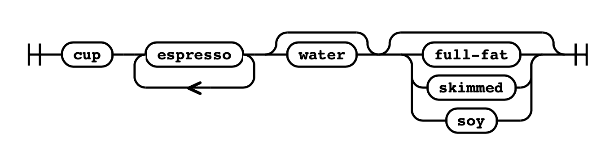
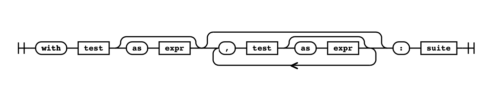
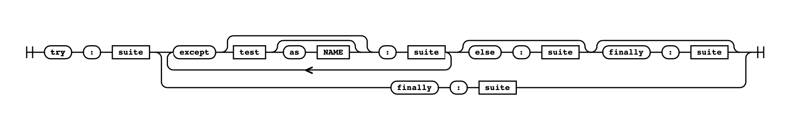
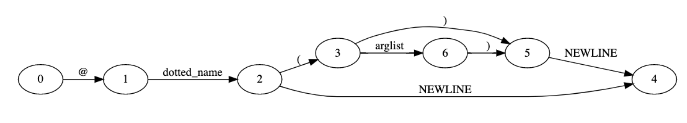
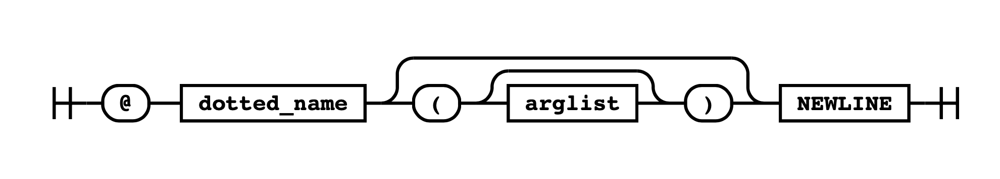
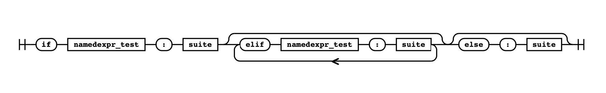

Python 语言和语法¶
编译器的目的是将一种语言转换成另一种语言。把编译器想象成一个翻译器。 比如你会雇一个翻译来听你说英语，然后翻译成日语。
为此，翻译人员必须了解源语言和目标语言的语法结构。
有些编译器会编译成低级机器码，可以直接在系统上执行。其他编译器会编译成一种中间语言，由虚拟机执行。
选择编译器时的一个考虑因素是系统可移植性要求。 Java 和 .NET CLR 将编译成一种中间语言，以便编译后的代码可以跨多个系统架构移植。 C、Go、C++ 和 Pascal 将编译成可执行的二进制文件。此二进制文件是为编译它的平台构建的。
Python 应用程序通常作为源代码分发。Python 解释器的作用是将Python源代码进行转换并一步执行。 CPython 运行时在第一次运行时会编译你的代码。这一步对普通用户是不可见的。
Python 代码不会被编译成机器码；它被编译成一种称为 字节码 的低级中间语言。
此字节码存储在 .pyc 文件中并缓存以供执行。
如果在不更改源代码的情况下两次运行同一个 Python 应用程序，则第二次执行速度会更快。
这是因为它加载编译后的字节码而不是每次都重新编译。
为什么 CPython 是用 C 而不是用 Python 编写¶
CPython 中的 C 是对 C 编程语言的引用，这意味着这个 Python 发行版是用 C 语言编写的。
这种说法大多是正确的：CPython 中的编译器是用纯 C 编写的。 但是，许多标准库模块是用纯 Python 或 C 和 Python 组合编写的。
那么为什么 CPython 编译器是用 C 而不是 Python 编写的呢？
答案在于编译器的工作方式。 有两种类型的编译器：
如果你要从头开始编写新的编程语言，则需要一个可执行应用程序来编译你的编译器！ 你需要一个编译器来执行任何事情，所以当开发新语言时，它们通常首先用更老的、更成熟的语言编写。
还有一些可用的工具可以读取语言规范并创建解析器。 流行的编译器-编译器（compiler-compilers）包括 GNU Bison、Yacc 和 ANTLR。
如果你想了解有关解析器的更多信息，请查看 lark 项目。 Lark 是一个用 Python 编写的上下文无关语法解析器。
编译器引导的一个很好的例子是 Go 编程语言。 第一个 Go 编译器是用 C 编写的，然后一旦 Go 可以编译了，就用 Go 重写编译器。
CPython 保留了 C 语言的传统；许多标准库模块，如 ssl 模块或套接字模块，都是用 C 编写的，用于访问低级操作系统 API。 Windows 和 Linux 内核中用于创建网络套接字、 使用文件系统或 与显示器交互的 API 都是用 C 编写的。 Python 的可扩展性层专注于 C 语言是有意义的。
有一个用 Python 编写的 Python 编译器，称为 PyPy。 PyPy 的标志是一个 衔尾蛇，代表编译器的自举性质。
Python 交叉编译器的另一个示例是 Jython。Jython 是用 Java 编写的，从 Python 源代码编译成 Java 字节码。 与 CPython 可以轻松导入 C 库并从 Python 中使用它们一样，Jython 可以轻松导入和引用 Java 模块和类。
创建编译器的第一步是定义语言。 例如，一下不是有效的 Python：
def my_example() <str> :
{
void* result = ;
}
编译器在尝试执行之前需要严格的语言语法结构规则。
对于本书的其余部分，
./python将指代 CPython 的编译版本。 但是，实际命令将取决于你的操作系统。对于 Windows：
> python.exe对于 Linux：
$ ./python对于 macOS：
$ ./python.exe
Python 语言规范¶
CPython 源代码中包含 Python 语言的定义。这个文档是所有 Python 解释器使用的参考规范。
该规范采用人类可读和机器可读的格式。文档里面是对 Python 语言的详细解释。包含允许的内容以及每个语句的行为方式。
语言文档¶
位于 Doc/reference 目录中的是 Python 语言中每个功能的 reStructured-Text 解释。
这些文件构成了 docs.python.org/3/reference 上的官方 Python 参考指南。
目录里面是你需要了解整个语言、结构和关键字的文件：
cpython/Doc/reference/
├── compound_stmts.rst 复合语句，如 if、while、for 和函数定义
├── datamodel.rst 对象、值和类型
├── executionmodel.rst Python程序的结构
├── expressions.rst Python 表达式的元素
├── grammar.rst Python 的核心语法（参考 Grammar/Grammar）
├── import.rst 导入系统
├── index.rst 语言参考索引
├── introduction.rst 参考文档介绍
├── lexical_analysis.rst 词法结构，如行、缩进、标记和关键字
├── simple_stmts.rst 简单的语句，如 assert、import、return 和 yield
└── toplevel_components.rst 执行 Python 的方式的描述，如脚本和模块
一个例子¶
在 Doc/reference/compound_stmts.rst，你可以看到一个定义 with 语句的简单示例。
with 语句有多种形式，最简单的是上下文管理器的实例化和嵌套的代码块：
with x():
...
你可以使用 as 关键字将结果分配给变量：
with x() as y:
...
你还可以使用逗号将上下文管理器链接在一起：
with x() as y, z() as jk:
...
文档包含语言的人类可读规范，机器可读规范包含在单个文件 Grammar Grammar 中。
语法文件¶
本节指的是“旧解析器”使用的语法文件。 在发布时，“新解析器”（PEG 解析器）是实验性的，尚未完成。
对于 3.8 及以下版本的 CPython，默认使用 pgen 解析器。 对于 CPython 3.9 及更高版本，PEG 解析器是默认的。可以在命令行上使用
-X oldparser启用旧解析器。两个解析器都使用
Tokens文件。
语法文件以一种称为巴科斯范式 (BNF) 的上下文符号编写。 巴科斯范式不是 Python 特有的，通常用作许多其他语言中的语法符号。
编程语言中语法结构的概念受到 Noam Chomsky 在 1950 年代关于句法结构的工作的启发！
Python 的语法文件使用扩展巴科斯范式（EBNF）规范和正则表达式语法。因此，在语法文件中，你可以使用：
*用于重复+至少重复一次[]用于可选部分|对于替代品()用于分组
例如，考虑如何定义一杯咖啡：
它必须有一个杯子
它必须包括至少一瓶浓缩咖啡（espresso），并且可以包含多个
它可以有牛奶，但可选
你可以在咖啡中加入多种牛奶，如全脂、脱脂和豆奶（soy）
在 EBNF 中定义的咖啡订单可能如下所示：
coffee: 'cup' ('espresso')+ ['water'] [milk]
milk: 'full-fat' | 'skimmed' | 'soy'
在本章中，语法是用铁路图形象化的。 这张图是咖啡语句的铁路图：

在铁路图中，每个可能的组合必须从左到右排成一条线。 可选语句可以被绕过，有些语句可以形成循环。
如果在语法文件中搜索 with_stmt，可以看到定义：
with_stmt: 'with' with_item (',' with_item)* ':' suite
with_item: test ['as' expr]
引号中的任何内容都是字符串文字，称为终端（terminal）。终端是识别关键字的方式。with_stmt 指定为：
从
with开始后面跟一个
with_item，它可以是test，和（可选的）as以及一个表达式expr接着是一个或多个
with_item，每个都用逗号隔开以
:结尾跟一个
suite
在这两行中引用了其他三个定义：
• suite 是指包含一个或多个语句的代码块
• test 指的是一个被评估的简单的语句
• expr 指的是一个简单的表达式
在铁路图中可视化，with 语句如下所示：

作为一个更复杂的例子，try 语句定义为：
try_stmt: ('try' ':' suite
((except_clause ':' suite)+
['else' ':' suite]
['finally' ':' suite] |
'finally' ':' suite))
except_clause: 'except' [test ['as' NAME]]
try 语句有两种用途：
try和一个或多个except子句，然后是一个可选的else，然后是一个可选的finallytry和只有一个finally语句
或者，在铁路图中可视化：

try 语句是更复杂结构的一个很好的例子。
如果你想详细了解 Python 语言，语法在 Grammar/Grammar 中定义。
使用解析器生成器（The Parser Generator）¶
Python 编译器从不使用语法文件本身。相反，解析器表由解析器生成器创建。 如果对语法文件进行更改，则必须重新生成解析器表并重新编译 CPython。
解析器表是潜在解析器状态的列表。当解析树变得复杂时，它们确保语法不会有歧义。
解析器生成器¶
解析器生成器的工作原理是将 EBNF 语句转换为非确定性有限自动机 (Non-deterministic Finite Automaton，NFA)。 NFA 状态和转换被解析并合并为一个确定性有限自动机 (Deterministic Finite Automaton，DFA)。
DFA 被解析器用作解析表。这种技术是在斯坦福大学形成的，并在 1980 年代开发，就在 Python 出现之前。
CPython 的解析器生成器 pgen 是 CPython 项目独有的。
pgen 应用程序在 Python 3.8 中从 C 重写为 Python，在文件 Parser/pgen/pgen.py 中。
它可通过以下执行：
$ ./python -m Parser.pgen [grammar] [tokens] [graminit.h] [graminit.c]
它通常从构建脚本执行，而不是直接执行。
DFA 和 NFA 没有视觉输出，但有一个带有有向图输出的 CPython 分支。
decorator 语法在 Grammar/Grammar 中定义为：
decorator: '@' dotted_name [ '(' [arglist] ')' ] NEWLINE
解析器生成器创建了一个包含 11 个状态的复杂 NFA 图。每个状态都用数字表示（在语法中提示它们的名称）。 状态转移被称为“弧”。
DFA 比 NFA 更简单，路径减少了：

NFA 和 DFA 图仅用于调试复杂语法的设计。
我们将使用铁路图代替 DFA 或 NFA 图来表示语法。例如，此图表示 decorator 语句可以采用的路径：

重新生成语法¶
要查看 pgen 的运行情况，让我们更改部分 Python 语法。
在 Grammar/Grammar 中搜索 pass_stmt 以查看 pass 语句的定义：
pass_stmt: 'pass'
通过添加选择 | 和 proceed 字面量，更改该行以接受终端（关键字）'pass' 或 'proceed' 作为关键字：
pass_stmt: 'pass' | 'proceed'
接下来，通过运行 pgen 重建语法文件。CPython 带有脚本来自动化 pgen。
在 macOS 和 Linux 上，运行 make regen-grammar：
$ make regen-grammar
对于 Windows，从 PCBuild 目录调出命令行并使用 --regen 标志运行 build.bat：
> build.bat --regen
你应该会看到一个输出，显示新的 Include/graminit.h 和 Python/graminit.c 文件已重新生成。
使用重新生成的解析器表，当你重新编译 CPython 时，它将使用新语法。
如果代码编译成功，你可以执行新的 CPython 二进制文件并启动 REPL。
在 REPL 中，你现在可以尝试定义一个函数。不要使用 pass 语句，
而是使用你编译到 Python 语法中的 proceed 关键字替代 pass：
$ ./python -X oldparser
Python 3.9.0b1 (tags/v3.9.0b1:97fe9cf, May 19 2020, 10:00:00)
[Clang 10.0.1 (clang-1001.0.46.4)] on darwin
Type "help", "copyright", "credits" or "license" for more information.
>>> def example():
... proceed
...
>>> example()
恭喜，你已经更改了 CPython 语法并编译了你自己的 CPython 版本。
接下来，我们将探索标记（tokens）及其与语法的关系。
标记（Tokens）¶
除了 Grammar 文件夹中的语法文件之外，还有 Grammar/Tokens 文件，
其中包含在分析树中作为叶节点找到的每个唯一类型。每个标记还有一个名称和一个生成的唯一 ID。
名称用于使在分词器（tokenizer）中更容易引用。
Grammar/Tokens文件是 Python 3.8 中的一项新功能。
例如，左括号称为 LPAR，分号称为称为 SEMI。 你将在本书后面看到这些标记：
LPAR '('
RPAR ')'
LSQB '['
RSQB ']'
COLON ':'
COMMA ','
SEMI ';'
和 Grammar 文件一样，如果你修改了 Grammar/Tokens 文件，你需要重新运行 pgen。
要查看操作中的标记，你可以使用 CPython 中的 tokenize 模块。
CPython 源代码中有两个标记器。这里演示了一个用 Python 编写的分词器，另一个用 C 编写。 用 Python 编写的分词器是一个实用程序，Python 解释器使用用 C 编写的那个。 它们具有相同的输出和行为。用 C 编写的版本是为性能而设计的，而 Python 中的模块是为调试而设计的。
cpython-book-samples/13/test_tokens.py:
# Demo application
def my_function(): proceed
将 test_tokens.py 文件输入到标准库中内置的名为 tokenize 的模块中。你将按行和字符看到标记列表。
使用 -e 标志输出确切的标记名称：
$ ./python -m tokenize -e test_tokens.py
0,0-0,0: ENCODING 'utf-8'
1,0-1,18: COMMENT '# Demo application'
1,18-1,19: NL '\n'
2,0-2,3: NAME 'def'
2,4-2,15: NAME 'my_function'
2,15-2,16: LPAR '('
2,16-2,17: RPAR ')'
2,17-2,18: COLON ':'
2,18-2,19: NEWLINE '\n'
3,0-3,4: INDENT ' '
3,4-3,11: NAME 'proceed'
3,11-3,12: NEWLINE '\n'
4,0-4,0: DEDENT ''
4,0-4,0: ENDMARKER ''
在输出中，第一列是行/列坐标的范围，第二列是标记的名称，最后一列是标记的值。
在输出中， tokenize 模块隐含了一些标记：
utf-8的ENCODING标记结尾的空白行
DEDENT关闭函数声明ENDMARKER结束文件
最佳做法是在 Python 源文件的末尾有一个空行。如果省略它，CPython 会为你添加它。
tokenize 模块是用纯 Python 编写的，位于 Lib/tokenize.py 中。
要查看 C 分词器的详细读数，您可以使用 -d 标志运行 Python。
使用之前创建的 test_tokens.py 脚本，使用以下命令运行它：
$ ./python -d test_tokens.py
Token NAME/'def' ... It's a keyword
DFA 'file_input', state 0: Push 'stmt'
DFA 'stmt', state 0: Push 'compound_stmt'
...
Token NEWLINE/'' ... It's a token we know
DFA 'funcdef', state 5: [switch func_body_suite to suite] Push 'suite'
DFA 'suite', state 0: Shift.
Token INDENT/'' ... It's a token we know
DFA 'suite', state 1: Shift.
Token NAME/'proceed' ... It's a keyword
DFA 'suite', state 3: Push 'stmt'
...
ACCEPT.
在输出中，你可以看到它突出显示了作为关键字的 proceed。
在下一章中，我们将看到执行 Python 二进制文件是如何到达分词器的，以及从那里执行代码时会发生什么。
要清理你的代码，请恢复
Grammar/Grammar中的更改，再次重新生成语法，然后清理构建并重新编译：对于 macOS 或 Linux：
$ git checkout -- Grammar/Grammar $ make regen-grammar $ make clobber $ make -j2 -s对于 Windows：
> git checkout -- Grammar/Grammar > build.bat --regen > build.bat -t CleanAll > build.bat -t Build
一个更复杂的例子¶
添加 proceed 作为 pass 的替代关键字是一个简单的更改，
解析器生成器将 'proceed' 作为 pass_stmt 标记的文字进行匹配。
这个新关键字无需对编译器进行任何更改即可工作。
在实践中，对语法的大多数更改都更加复杂。
Python 3.8 引入了赋值表达式，格式为 :=。赋值表达式既为名称赋值，又返回命名变量的值。
受在 Python 语言中添加赋值表达式影响的语句之一是 if 语句。
在 3.8 之前，if 语句定义为：
关键字
if后跟test，然后是:嵌套的一系列语句（
suite）零个或多个
elif语句，后跟test、一个:和suite一个可选的
else语句，后跟一个:和一个suite
在语法中，这表示为：
if_stmt: 'if' test ':' suite ('elif' test ':' suite)* ['else' ':' suite]
可视化之后看起来像：
为了支持赋值表达式，更改需要向后兼容。 因此，在 if 语句中使用 := 必须是可选的。
if 语句中使用的 test 标记类型在许多语句之间是通用的。例如，assert 语句后跟一个 test（然后是可选的第二个 test）。
assert_stmt: 'assert' test [',' test]
在 3.8 中添加了替代 test 标记类型，以便语法可以规定哪些语句应该支持赋值表达式，哪些不应该支持。
这个称为 namedexpr_test，在 Grammer 中定义为：
namedexpr_test: test [':=' test]
或者，在铁路图中可视化为：
if 语句的新语法已更改为用 namedexpr_test 替换 test：
if_stmt: 'if' namedexpr_test ':' suite ('elif' namedexpr_test ':' suite)
['else' ':' suite]
在铁路图中可视化：

为了区分 := 和现有的 COLON (:) 和 EQUAL (=) 标记，将以下标记也添加到 Grammar/Tokens 中：
COLONEQUAL ':='
这不是支持赋值表达式所需的唯一更改。 如 Pull Request 中所示，这一变化改变了 CPython 编译器的许多部分。
有关 CPython 解析器生成器的更多信息，
pgen的作者在 PyCon Europe 2019 上录制了 有关实现和设计的演示文稿：“野兽之魂”。
总结¶
在本章中，你已经了解了 Python 语法定义和解析器生成器。 在下一章中，你将扩展该知识以构建更复杂的语法功能，即“几乎等于”运算符。
在实践中，必须仔细考虑和讨论对 Python 语法的更改。审查水平有两个原因：
拥有“太多”的语言特性或复杂的语法会改变 Python 作为一种简单易读的语言的精神
语法更改引入向后不兼容，这给所有开发人员增加了工作
如果 Python 核心开发人员提议对语法进行更改，则必须将其作为 Python 增强提案 (PEP) 提出。 所有 PEP 都在 PEP 索引上进行编号和索引。 PEP 5 记录了语言发展的指南，并指定必须在 PEP 中提出更改。
成员还可以通过 python-ideas 邮件列表建议对核心开发组之外的语言进行更改。
你可以在 PEP 索引中查看 CPython 未来版本的起草的、拒绝的和接受的 PEP。 一旦 PEP 达成共识，并且草案已定稿，指导委员会必须接受或拒绝它。 PEP 13 中定义的指导委员会的任务规定， 他们应努力“维护 Python 语言和 CPython 解释器的质量和稳定性”。